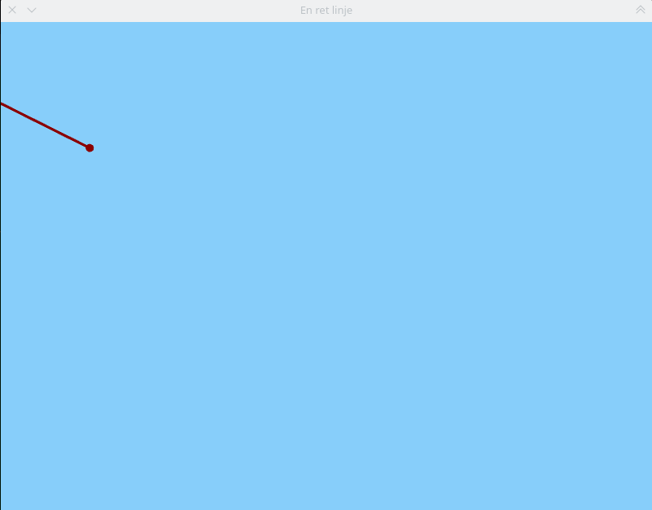
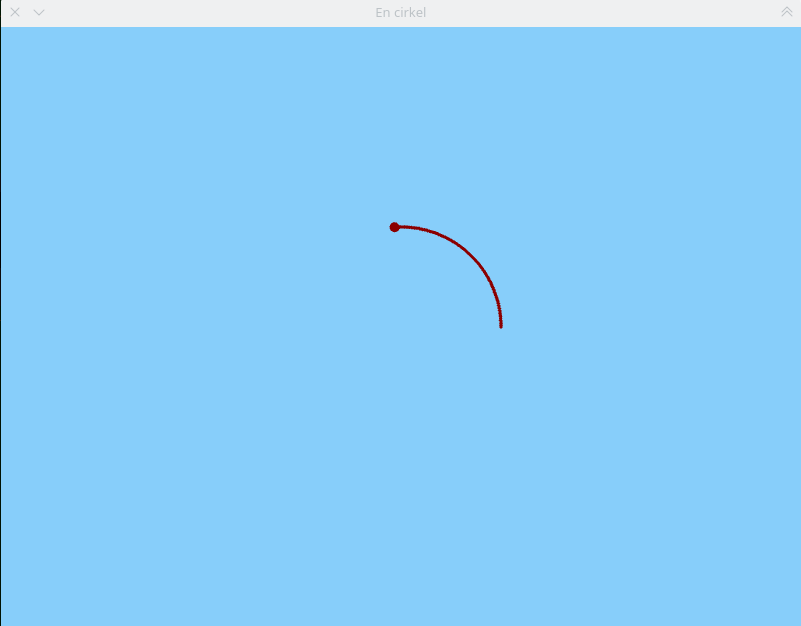
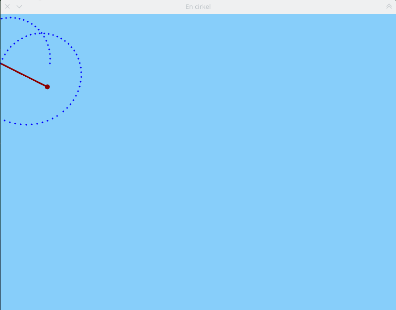
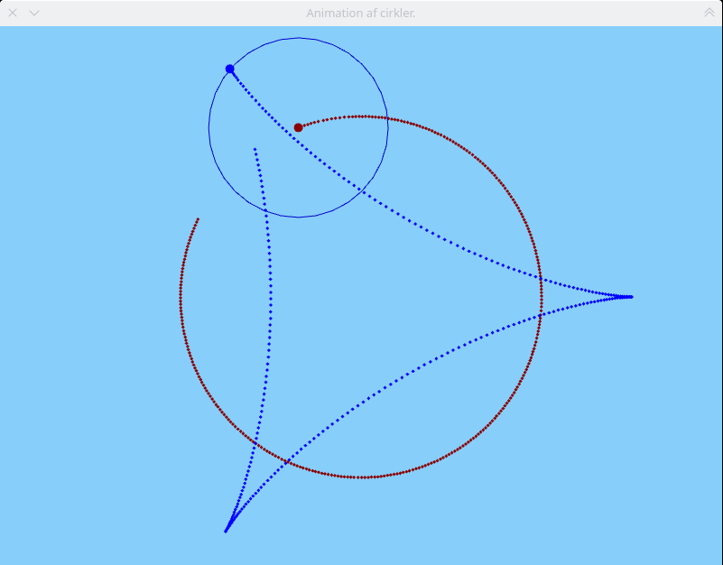
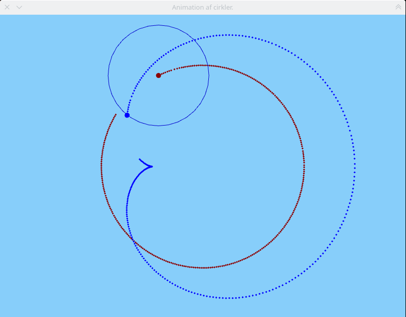
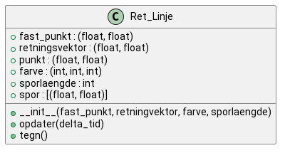

Vektorfunktioner i matematik og programmering
SRC - 2.p - Vibenshus Gymnasium
Introduktion
Efter en matematisk introduktion til begrebet vektorfunktioner, også kaldet parameterfremstillinger, er det tid til at se på, hvordan sådanne kan animeres i programmering. Vi kommer til at anvende python sammen med bibliotektet arcade, som allerede anvendes i programmeringsundervisningen.
Fra matematik til programmering
I løbet af denne præsentation vil der blive taget udgangspunkt i den rette linje og cirklen beskrevet som vektorfunktioner. For at repetere skriver vi lige de generelle vektorfunktioner for den rette linje og cirklen op her:
Den rette linje
Den rette linje kan beskrives ved hjælp af et kendt punkt \(P_0 = \begin{pmatrix} x_0\\x_y \end{pmatrix}\) på linjen samt en retningsvektor \(\vec{r} = \begin{pmatrix} r_x \\ r_y \end{pmatrix}\). Den endelige vektorfunktion kan derefter skrives som:
\[\vec{P} (t) = \begin{pmatrix} r_x \cdot t + x_0 \\ r_y \cdot t + y_0 \end{pmatrix}\,.\]
Hvis I klikker på billedet af vektorfunktionen for den rette linje, kan I downloade den tilhørende geogebrafil. I denne fil kan I eksperimentere med det kendte punkt på linjen samt retningsvektoren ved at flytte rundt på de to blå punkter. For at animere linjen skal I bare trække rundt i skyderen t.
Cirklen
Cirklen beskrives som bekendt ved hjælp af et centrum \((x_0, y_0)\) og en radius \(r\), men dette er ikke nok, hvis cirklen skal animeres. Derfor indfører man en vinkel målt fra den positive x-retning, og denne vinkel kan ydermere beskrives som en vinkelhastighed ganget med tiden (eller hvad man nu kalder parameteren), \(\theta = \omega \cdot t\). Endelig kan man også tilføre en faseforskydning (ofte bare kaldet fasen) \(\phi\), som forskyder startvinklen, når \(t=0\). Den endelige vektorfunktion ser derfor således ud:
\[\vec{P} (t) = \begin{pmatrix} x_0 + r \cdot \cos \left( \omega \cdot t + \phi \right) \\ y_0 + r \cdot \sin \left( \omega \cdot t + \phi \right)\end{pmatrix}\,.\]
Igen kan I klikke på billedet for at downloade den tilhørende geogebrafil. Denne gang kan I flytte rundt på cirklens centrum ved at trække i punktet \(C\), og så ellers eksperimentere med radius, vinkelhastighed og fase ved hjælp af skyderne. Animationen skabes igen ved at trække i skyderen t.
Fra geogebra til arcade
Når vi skal animere forskellige vektorfunktioner i arcade i stedet for geogebra, skal vi være opmærksomme på en række ting.
- I geogebra kan man zoome ind og ud som man lyster.
- I arcade tælles koordinatsystemet i pixels.
- I geogebra kan man flytte tegnefladen/koordinatsystemet rundt med musen.
- I arcade ligger (0,0) altid nede i venstre hjørne.
- I geogebra instiller man selv tiden og tidsskridt vha skyderen
- I arcade opdateres skærmen som hovedregel 60 gange i sekundet.
Dette skal I tage højde for, når I skal udvikle jeres egne bevægelser og animationerne af disse.
I de følgende afsnit vil I se forskellige måder til at animere rette linjer, cirkler og kombinationer af disse. Vi lægger ud med imperative procedurale løsninger for efterfølgende at se på objektorienterede løsninger.
Imperative procedurale løsninger
Overskriften er bare en fancy måde at skrive "løsninger vha de teknikker I kender allerede". :)
Den rette linje
Her er et eksempel på, hvordan en vektorfunktionen for en ret linje kan animeres i arcade. Logikken i koden minder om anvendelsen af en skyder til tiden i geogebra.
# Dette er et eksempel på en animation af en ret linje, som en vektorfunktion # Animationen foregår vha biblioteket arcade import arcade BREDDE = 800 HOEJDE = 600 SPORLAENGDE = 200 FARVE = arcade.csscolor.DARK_RED def ret_linje(tid, stationaert_punkt, retningsvektor): """Returnerer x- og y-koordinaterne til et punkt på en ret linje. Er implementeret på helt samme måde, som i matematik.""" x_0, y_0 = stationaert_punkt r_x, r_y = retningsvektor # De to næste linjer er som taget fra matematikbogen x = x_0 + r_x * tid y = y_0 + r_y * tid return x, y # Denne funktion kaldes vha arcade.schedule i main. Bliver kaldt 60 gange i sekundet. def tegn(delta_tid): arcade.start_render() # Beregner punkt på linjen x,y = ret_linje(tegn.tid, (0,500),(1,-0.5)) # Tegner punktet på linjen arcade.draw_circle_filled(x, y, 5, FARVE) # Fjerner det første punkt i sporet, hvis sporet er for langt if len(tegn.spor) > SPORLAENGDE: tegn.spor.pop(0) # Tegner sporet for punkt in tegn.spor: arcade.draw_circle_filled(*punkt, 2, FARVE) # Opdaterer tiden, hvis punktet er inden for vinduet if (x >= 0 and x <BREDDE) and (y >= 0 and y <= HOEJDE): # Tiden opdateres med 1 tegn.tid += delta_tid * 60 # Tilføjer det sidste nye punkt til sporet tegn.spor.append((x,y)) # Stopper animationen, hvis punktet på linjen er uden for vinduet else: # Tiden holdes konstant, så animationen stopper tegn.tid = tegn.tid def main(): arcade.open_window(BREDDE, HOEJDE, "En ret linje") arcade.set_background_color(arcade.csscolor.LIGHT_SKY_BLUE) tegn.tid = 0 tegn.spor = list() arcade.schedule(tegn, 1/60) # Funktionen tegn kaldes 60 gange i sekundet arcade.run() main()
Animationen skulle gerne ligne det følgende: 
Opgaver
- Skift farven på linjen. Både punkt og spor, eller hver for sig.
- Ændr startpunktet for linjen.
- Ændr retningen for linjen.
- Ændr antallet af punkter i sporet.
- Kan I ændre på hastigheden også?
- Kan I tegne 2 forskellige linjer på en gang?
Cirklen
Her ser I et eksempel på animationen af en cirkel. Her er der igen en variabel tid, som holder styr på, hvad tiden er. Tiden bliver opdateret ca. 60 gange i sekundet.
# Dette er et eksempel på en animation af en cirkel, som en vektorfunktion # Animationen foregår vha biblioteket arcade import arcade import math BREDDE = 800 HOEJDE = 600 SPORLAENGDE = 200 FARVE = arcade.csscolor.DARK_RED def cirkel(tid, centrum, radius, vinkelhastighed, fase = 0): """Returnerer x- og y-koordinaterne til et punkt på periferien af en cirkel. Cirklen er defineret ud fra et centrum, en radius, en vinkelhastighed samt en fase. Er implementeret på helt samme måde, som i matematik.""" x_c, y_c = centrum # De to næste linjer er som taget fra matematikbogen x = x_c + radius * math.cos(vinkelhastighed * tid + fase) y = y_c + radius * math.sin(vinkelhastighed * tid + fase) return x, y # Denne funktion kaldes vha arcade.schedule i main. Bliver kaldt 60 gange i sekundet. def tegn(delta_tid): arcade.start_render() # Beregner punkt på cirklens periferi x,y = cirkel(tegn.tid, (BREDDE/2, HOEJDE/2), 100, 1, 0) # Tegner punktet på cirklens periferi arcade.draw_circle_filled(x, y, 5, FARVE) # Fjerner det første punkt i sporet, hvis sporet er for langt if len(tegn.spor) > SPORLAENGDE: tegn.spor.pop(0) # Tegner sporet for punkt in tegn.spor: arcade.draw_circle_filled(*punkt, 2, FARVE) # Opdaterer tiden tegn.tid += delta_tid # Tilføjer det sidste nye punkt til sporet tegn.spor.append((x,y)) def main(): arcade.open_window(BREDDE, HOEJDE, "En cirkel") arcade.set_background_color(arcade.csscolor.LIGHT_SKY_BLUE) tegn.tid = 0.0 tegn.spor = list() arcade.schedule(tegn, 1/60) # Funktionen tegn kaldes 60 gange i sekundet arcade.run() main()
Animationen skulle gerne se nogenlunde således ud: 
Opgaver
- Skift farven på cirklen. Både punkt og spor, eller hver for sig.
- Ændr centrum.
- Ændr omløbsretning og fart.
- Ændr på fasen.
- Ændr antallet af punkter i sporet.
- Kan I tegne 2 forskellige cirkler på en gang?
Sammesatte bevægelser
Lad os se, hvad der sker, hvis man danner en sammensat bevægelse af den rette linje og en cirkel. Lad os sige, at vi i stedet for at lade cirklens centrum ligge fast, så sætter vi cirklens centrum til at være det bevægede punkt på den rette linje.
# Dette er et eksempel på en sammensat animation af en cirkel på en ret linje som en vektorfunktion # Animationen foregår vha biblioteket arcade import arcade import math BREDDE = 800 HOEJDE = 600 SPORLAENGDE_LINJE = 200 SPORLAENGDE_CIRKEL = 200 FARVE_LINJE = arcade.csscolor.DARK_RED FARVE_CIRKEL = arcade.csscolor.BLUE # Genbrugt fra eksemplet med den rette linje def ret_linje(tid, stationaert_punkt, retningsvektor): """Returnerer x- og y-koordinaterne til et punkt på en ret linje. Er implementeret på helt samme måde, som i matematik.""" x_0, y_0 = stationaert_punkt r_x, r_y = retningsvektor # De to næste linjer er som taget fra matematikbogen x = x_0 + r_x * tid y = y_0 + r_y * tid return x, y # Genbrugt fra eksemplet med cirklen def cirkel(tid, centrum, radius, vinkelhastighed, fase = 0): """Returnerer x- og y-koordinaterne til et punkt på periferien af en cirkel. Cirklen er defineret ud fra et centrum, en radius, en vinkelhastighed samt en fase. Er implementeret på helt samme måde, som i matematik.""" x_c, y_c = centrum # De to næste linjer er som taget fra matematikbogen x = x_c + radius * math.cos(vinkelhastighed * tid + fase) y = y_c + radius * math.sin(vinkelhastighed * tid + fase) return x, y # Denne funktion kaldes vha arcade.schedule i main. Bliver kaldt 60 gange i sekundet. def tegn(delta_tid): arcade.start_render() # Først punkt for linjen x_linje,y_linje = ret_linje(tegn.tid, (0,500),(1,-0.5)) # Tegner punktet på linjen arcade.draw_circle_filled(x_linje, y_linje, 5, FARVE_LINJE) # Fjerner det første punkt i sporet, hvis sporet er for langt if len(tegn.spor_linje) > SPORLAENGDE_LINJE: tegn.spor_linje.pop(0) # Tegner sporet for linjen for punkt in tegn.spor_linje: arcade.draw_circle_filled(*punkt, 2, FARVE_LINJE) # Beregner punkt på cirklens periferi # Linjens punkt sættes til at være cirklens centrum x_cirkel,y_cirkel = cirkel(tegn.tid, (x_linje, y_linje), 100, 0.1, 0) # Tegner punktet på cirklens periferi arcade.draw_circle_filled(x_cirkel, y_cirkel, 5, FARVE_CIRKEL) # Fjerner det første punkt i sporet, hvis sporet er for langt if len(tegn.spor_cirkel) > SPORLAENGDE_CIRKEL: tegn.spor_cirkel.pop(0) # Tegner sporet for punkt in tegn.spor_cirkel: arcade.draw_circle_filled(*punkt, 2, FARVE_CIRKEL) # Opdaterer tiden, hvis punktet for linjen er inden for vinduet if (x_linje >= 0 and x_linje <BREDDE) and (y_linje >= 0 and y_linje <= HOEJDE): # Tiden opdateres med 1 tegn.tid += delta_tid * 60 # Der er ganget med 60 for at få animationen til gå hurtigere. # Tilføjer det sidste nye punkt til sporet for linjen tegn.spor_linje.append((x_linje,y_linje)) # Tilføjer det sidste nye punkt til sporet for cirklen tegn.spor_cirkel.append((x_cirkel, y_cirkel)) # Stopper animationen, hvis punktet på linjen er uden for vinduet else: # Tiden holdes konstant, så animationen stopper tegn.tid = tegn.tid def main(): arcade.open_window(BREDDE, HOEJDE, "En cirkel") arcade.set_background_color(arcade.csscolor.LIGHT_SKY_BLUE) tegn.tid = 0.0 tegn.spor_linje = list() tegn.spor_cirkel = list() arcade.schedule(tegn, 1/60) # Funktionen tegn kaldes 60 gange i sekundet arcade.run() main()
I kan se animationen af den sammensatte bevægelse mellem linjen og cirklen her.

Opgaver
- Gennemgå koden i makkerpar. Se på forskelle og ligheder med de to tidligere eksempler om den rette linje og cirklen alene.
- Få linjen til at køre vandret.
- Eksperimenter med radius og vinkelhastighed for cirklen.
- Få cirklen til at dreje den modsatte vej.
- Få punkterne på linjen og cirklen til at "køre i takt", så den samlede bevægelse (punktet på cirklen), ligner banekurven for ventilen på et cykelhjul, som kører hen over en flad vej.
Opgave: 2 sammensatte cirkler
Nu er det jeres tur til at animere den sammensatte bevægelse for 2 cirkler.
I første omgang skal I se, om I kan danne nogle animationer, som ligner de to følgende:


- Efterfølgende kan I eksperimentere med forholdene mellem de to cirklers radier og vinkelhastigeder, og så se hvilke nye mønstre I kan skabe.
"There must be a better way" - Raymond Hettinger python core developer
Forestil jer at I nu skal kombinere 3, 4 eller endnu flere bevægelser. Kan I forestille jer, hvor mange cirkler og linjer, I skal holde styr på?
Lad os prøve at se, hvad der sker her:
Man kan tilgå det som en hjemmeside for sig: https://editor.p5js.org/jcponce/full/x-Jt7k2fc
For at kunne holde styr på hver enkelt bevægelse (cirkel, linje, eller måske noget helt tredje), kan man gøre det vha ObjektOrienteret Programmering OOP.
Objektorienterede løsninger
Objektorienteret programmering er et paradigme inden for programmering. De allerførste idéer til OOP så man i 1950 og 1960'erne i det akademiske miljø, hvor det måske kunne bruges til forskning i kunstig intelligens. I 1970'erne så man sproget smalltalk for første gang, som har påvirket stort se alle efterfølgende OOP-sprog. I 1980'erne opstod C++, hvor Bjarne Stroustrup udvidede almindelig C til at være objektorienteret. I 1990'erne blev objektorienteret programmering det dominerende paradigme, og man så de første versioner af f.eks. java og python. Java var stærkt inspireret af C++ i syntaks, mens python havde meget af sin inspiration fra smalltalk.
OOP for dummies
I OOP skriver man generelle klasser og opretter specifikke objekter på baggrund af disse klasser. I en klasse/et objekt kan man gemme værdier og funktioner, som knytter sig særligt til klassen. En person kunne være et godt eksempel på en klasse. En person har bl.a. et navn, en alder og køn og kan f.eks. give en hilsen. Alt hvad en klasse har kaldes attributter, felter eller variable afhængig af sproget, og der skelnes også mellem klasse-variable og instans-variable. Alt hvad en klasse/et objekt kan kaldes metoder. Metoder er det samme som funktioner, men gælder for klassen/objektet. Objekter er instanser af klasser. Tænk på klassen som idéen/blueprintet mens objektet er den virkelige "ting". I virkeligheden er Alice og Bob er to forskellige personer. I OOP vil de derfor være to forskellige objekter af den samme klasse, som her hedder Person.
Det bliver meget langt at skrive det hele her i denne præsentation. Derfor kan I se meget mere om emnet her: https://learn.arcade.academy/en/latest/chapters/16_classes/classes.html
Det bliver meget nemmere at forstå, når vi gennemgår eksemplerne.
Den rette linje - OOP
Her er en simpel implementation af den rette linje som en klasse/objekt.
Der oprettes en klasse for den rette linje fra bunden, mens der skabes en ny klasse gennem nedarving, som skal repræsentere selve vinduet og animationen i arcade.
Lad os først demonstrere, hvad koden gør. Bagefter kan vi gennemgå den.
import arcade BREDDE = 800 HOEJDE = 600 SPORLAENGDE = 200 class Ret_Linje: def __init__(self, fast_punkt, retningsvektor, farve, sporlaengde = None): self.fast_punkt = fast_punkt self.retningsvektor = retningsvektor self.punkt = self.fast_punkt self.farve = farve self.sporlaengde = sporlaengde if self.sporlaengde: self.spor = list() def opdater(self, delta_tid): if self.sporlaengde: self.spor.append(self.punkt) if self.sporlaengde and len(self.spor) >= self.sporlaengde: self.spor.pop(0) x, y = self.punkt vx, vy = self.retningsvektor x += vx * delta_tid y += vy * delta_tid self.punkt = (x, y) def tegn(self): x, y = self.punkt arcade.draw_circle_filled(x, y, 5, self.farve) for punkt in self.spor: x, y = punkt arcade.draw_circle_filled(x, y, 2, self.farve) class Vindue(arcade.Window): def __init__(self, width, height, title): super().__init__(width, height, title) arcade.set_background_color(arcade.csscolor.LIGHT_SKY_BLUE) def setup(self): self.ret_linje = Ret_Linje((100, 50), (100, 50), arcade.csscolor.RED, 100) def update(self, delta_tid): self.ret_linje.opdater(delta_tid) def on_draw(self): self.clear() self.ret_linje.tegn() def main(): vindue = Vindue(BREDDE, HOEJDE, "Ret linje som klasse") vindue.setup() arcade.run() main()
Tilhørende klassediagram
Når man skal dokumentere/beskrive klasser/objekter, anvender man klassediagrammer. Klassediagrammer skrives i UML (Unified Modeling Languange) og kan både beskrive, hvordan klasser er opbygget og hvordan forskellige klasser relaterer sig til hinanden.
I det følgende eksempel kan I se "koden" til at danne klassediagrammet for den rette linje skrevet i plantuml. {field} betyder variable mens {method}, som navnet antyder, beskriver objektets metoder. Når der står + (plus) betyder det at variablen eller metoden er public. Hvis man skriver - (minus) i stedet for, så er variablen/metoden private. Hvis noget er public, så kan andre objekter eller anden kode tilgå variablen/metoden, mens hvis det er private, så er det kun klassen/objektet selv, som kan tilgå det. I Python er alt dog som udgangspunkt public, og det er op til programmøren at sørge for, at der ikke f.eks. skrives utilsigtet til et objekts variable.
Læg mærke til at klassediagrammet er inddelt i 3 dele. Første del angiver klassen navn. Anden del angiver klassen variable, mens tredje del angiver klassen metoder. Man kan kende forskel på variable og metoder ved at se, om der er parenteser efter eller ej. Metoder er funktioner, som knytter sig til et objekt/en klasse, og har derfor parenteser efter sig.
@startuml class Ret_Linje { {field} +fast_punkt : (float, float) {field} +retningsvektor : (float, float) {field} +punkt : (float, float) {field} +farve : (int, int, int) {field} +sporlaengde : int {field} +spor : [(float, float)] {method} +__init__(fast_punkt, retningvektor, farve, sporlaengde) {method} +opdater(delta_tid) {method} +tegn() } @enduml

Cirklen
Her ser I en implementering af cirklen vha. OOP. Vi demonstrerer lige først, hvad programmet gør.
import arcade import math BREDDE = 800 HOEJDE = 600 SPORLAENGDE = 200 class Cirkel: def __init__(self, centrum, radius, vinkelhastighed, vinkel, farve, sporlaengde = None): self.centrum = centrum self.radius = radius self.vinkelhastighed = vinkelhastighed self.vinkel = vinkel self.punkt = centrum[0] + self.radius * math.cos(self.vinkel), centrum[1] + self.radius * math.sin(self.vinkel) self.farve = farve self.sporlaengde = sporlaengde if self.sporlaengde: self.spor = list() def updater(self, delta_tid): if self.sporlaengde: self.spor.append(self.punkt) if self.sporlaengde and len(self.spor) >= self.sporlaengde: self.spor.pop(0) self.vinkel += self.vinkelhastighed * delta_tid self.punkt = self.centrum[0] + self.radius * math.cos(self.vinkel), self.centrum[1] + self.radius * math.sin(self.vinkel) def tegn(self): x, y = self.punkt arcade.draw_circle_filled(x, y, 5, self.farve) for punkt in self.spor: x, y = punkt arcade.draw_circle_filled(x, y, 2, self.farve) class Vindue(arcade.Window): def __init__(self, width, height, title): super().__init__(width, height, title) arcade.set_background_color(arcade.csscolor.LIGHT_SKY_BLUE) def setup(self): self.cirkel = Cirkel((400, 300), 100, 5, 0, arcade.csscolor.RED, 100) def update(self, delta_tid): self.cirkel.updater(delta_tid) def on_draw(self): self.clear() self.cirkel.tegn() def main(): vindue = Vindue(BREDDE, HOEJDE, "Cirkel som klasse") vindue.setup() arcade.run() main()
Opgave
I skal selv danne et klassediagram for cirklen.
- Brug vejledningen her: https://plantuml.com/class-diagram
- Skriv koden til plantuml ind i online serveren her: https://www.plantuml.com/plantuml/uml/
Sammensat bevægelse med objekter
Hvis man nu skal danne en sammensat bevægelse af den rette linje og cirklen fra tidligere, så er der 2 oplagte måder at gøre det på.
Lad os sammensætte bevægelsen, så cirklen drejer rundt om den rette linjes punkt.
- metode Man kan animere den ret linje som hele tiden, men opdatere cirklens centrum til at være linjens punkt, inden man opdatere cirklens punkt.
- metode Man kan lade cirklen dreje om origo og linjen bevæge sig som hidtil, men uden at tegne punkterne. Altså bare anvende opdater-metoderne. Herefter kan man så tegne den sammensatte bevægelse ved at lægge koordinaterne til punkterne for linjen og cirklen sammen. Her skal man så selv sørge for at tegne punktet vha. arcades primitive draw-funktioner.
1. metode
Her opdateres cirklens centrum for hver iteration.
import arcade import math BREDDE = 800 HOEJDE = 600 SPORLAENGDE = 200 class Ret_Linje: def __init__(self, fast_punkt, retningsvektor, farve, sporlaengde = None): self.fast_punkt = fast_punkt self.retningsvektor = retningsvektor self.punkt = self.fast_punkt self.farve = farve self.sporlaengde = sporlaengde if self.sporlaengde: self.spor = list() def opdater(self, delta_tid): if self.sporlaengde: self.spor.append(self.punkt) if self.sporlaengde and len(self.spor) >= self.sporlaengde: self.spor.pop(0) x, y = self.punkt vx, vy = self.retningsvektor x += vx * delta_tid y += vy * delta_tid self.punkt = (x, y) def tegn(self): x, y = self.punkt arcade.draw_circle_filled(x, y, 5, self.farve) for punkt in self.spor: x, y = punkt arcade.draw_circle_filled(x, y, 2, self.farve) class Cirkel: def __init__(self, centrum, radius, vinkelhastighed, vinkel, farve, sporlaengde = None): self.centrum = centrum self.radius = radius self.vinkelhastighed = vinkelhastighed self.vinkel = vinkel self.punkt = centrum[0] + self.radius * math.cos(self.vinkel), centrum[1] + self.radius * math.sin(self.vinkel) self.farve = farve self.sporlaengde = sporlaengde if self.sporlaengde: self.spor = list() def opdater(self, delta_tid): if self.sporlaengde: self.spor.append(self.punkt) if self.sporlaengde and len(self.spor) >= self.sporlaengde: self.spor.pop(0) self.vinkel += self.vinkelhastighed * delta_tid self.punkt = self.centrum[0] + self.radius * math.cos(self.vinkel), self.centrum[1] + self.radius * math.sin(self.vinkel) def tegn(self): x, y = self.punkt arcade.draw_circle_filled(x, y, 5, self.farve) for punkt in self.spor: x, y = punkt arcade.draw_circle_filled(x, y, 2, self.farve) class Vindue(arcade.Window): def __init__(self, width, height, title): super().__init__(width, height, title) arcade.set_background_color(arcade.csscolor.LIGHT_SKY_BLUE) def setup(self): self.ret_linje = Ret_Linje((50, 500), (20,-10), arcade.csscolor.YELLOW, 100) self.cirkel = Cirkel(self.ret_linje.punkt, 20, -5, 0, arcade.csscolor.GREEN, 100) def update(self, delta_tid): # Opdaterer cirklens centrum til at være linjens punkt self.cirkel.centrum = self.ret_linje.punkt self.ret_linje.opdater(delta_tid) self.cirkel.opdater(delta_tid) def on_draw(self): self.clear() self.cirkel.tegn() self.ret_linje.tegn() def main(): vindue = Vindue(BREDDE, HOEJDE, "Sammensat bevægelse af ret linje og cirkel") vindue.setup() arcade.run() main()
2. metode
Her oprettes der en ret linje og en cirkel, som bare bevæger sig rundt om origo. Den sammensatte bevægelse tegnes ved "bare" at lægge de to bevægelser sammen. Selve animationen foregår uden for objekterne. Sporene er fjernet fra selve bevægelsesklasserne og er implementeret i Vindues-klassen i stedet for.
import arcade import math BREDDE = 800 HOEJDE = 600 SPORLAENGDE = 200 class Ret_Linje: def __init__(self, fast_punkt, retningsvektor, farve, sporlaengde = None): self.fast_punkt = fast_punkt self.retningsvektor = retningsvektor self.punkt = self.fast_punkt self.farve = farve self.sporlaengde = sporlaengde if self.sporlaengde: self.spor = list() def opdater(self, delta_tid): if self.sporlaengde: self.spor.append(self.punkt) if self.sporlaengde and len(self.spor) >= self.sporlaengde: self.spor.pop(0) x, y = self.punkt vx, vy = self.retningsvektor x += vx * delta_tid y += vy * delta_tid self.punkt = (x, y) def tegn(self): x, y = self.punkt arcade.draw_circle_filled(x, y, 5, self.farve) # Tidligere tegnede vi også sporet her. Nu er det flyttet til Vinduesklassen class Cirkel: def __init__(self, centrum, radius, vinkelhastighed, vinkel, farve, sporlaengde = None): self.centrum = centrum self.radius = radius self.vinkelhastighed = vinkelhastighed self.vinkel = vinkel self.punkt = centrum[0] + self.radius * math.cos(self.vinkel), centrum[1] + self.radius * math.sin(self.vinkel) self.farve = farve self.sporlaengde = sporlaengde if self.sporlaengde: self.spor = list() def opdater(self, delta_tid): if self.sporlaengde: self.spor.append(self.punkt) if self.sporlaengde and len(self.spor) >= self.sporlaengde: self.spor.pop(0) self.vinkel += self.vinkelhastighed * delta_tid self.punkt = self.centrum[0] + self.radius * math.cos(self.vinkel), self.centrum[1] + self.radius * math.sin(self.vinkel) def tegn(self): x, y = self.punkt arcade.draw_circle_filled(x, y, 5, self.farve) # Tidligere tegnede vi også sporet her. Nu er det flyttet til Vinduesklassen for punkt in self.spor: x, y = punkt arcade.draw_circle_filled(x, y, 2, self.farve) class Vindue(arcade.Window): def __init__(self, width, height, title): super().__init__(width, height, title) arcade.set_background_color(arcade.csscolor.LIGHT_SKY_BLUE) def setup(self): self.ret_linje = Ret_Linje((50, 500), (20,-10), arcade.csscolor.YELLOW) # Cirklen skal bare bevæge sig rundt om origo self.cirkel = Cirkel((0, 0), 20, -5, 0, arcade.csscolor.GREEN) self.samlet_spor = list() self.samlet_punkt = None self.samlet_sporlaengde = 100 def update(self, delta_tid): # Opdaterer linje og cirkel hver for sig x_samlet = self.ret_linje.punkt[0] + self.cirkel.punkt[0] y_samlet = self.ret_linje.punkt[1] + self.cirkel.punkt[1] self.samlet_punkt = (x_samlet, y_samlet) self.samlet_spor.append(self.samlet_punkt) if len(self.samlet_spor) >= self.samlet_sporlaengde: self.samlet_spor.pop(0) self.ret_linje.opdater(delta_tid) self.cirkel.opdater(delta_tid) def on_draw(self): self.clear() arcade.draw_circle_filled(*self.samlet_punkt, 5, arcade.csscolor.TOMATO) for punkt in self.samlet_spor: arcade.draw_circle_filled(*punkt, 2, arcade.csscolor.TOMATO) def main(): vindue = Vindue(BREDDE, HOEJDE, "Sammensat bevægelse af ret linje og cirkel") vindue.setup() arcade.run() main()
Nu er det slut med at holde jer i hånden. Nu skal I selv til at arbejde!
Eksperimentelt arbejde
I jeres eksperimentelle arbejde kan/skal I arbejde med f.eks.
- Andre bevægelser end rette linjer og cirkler.
Det kan f.eks. være
- ellipser
- (kaste)parabler
- "Tilfældige" funktioner for x(t) og y(t). Kun fantasien sætter grænser.
- Andre sammensatte bevægelser
- Sæt "mange" forskellige bevægelser sammen.
- Bliv inspireret fra virkeligheden.
- Hvordan bevæger forlystelsen Tik-Tak i Tivoli sig?
- Hvordan ser banekurven ud for ventilen i en bold, hvis bolden kastes med skrue?
- Oversæt almindelige matematiske funktioner til vektorfunktioner og animér dem i python/arcade.
- Kan I kombinere flere af disse vektorfunktioner?
- Kan I kommer på banekurver, som kun kan tegnes med vektorfunktioner og ikke almindelige funktioner? Det kunne f.eks. være et loop på en rutschebane i en forlystelsespark.
Programmeringskrav til jeres SRC-rapporter
Når I skriver jeres rapporter her til SRC'en, skal I sørge for at have følgende med, hvor det er relevant:
- rutediagrammer/flowcharts over programmets kørsel (Se mere på plantuml, hvor rutediagrammer hedder activity diagram)
- klassediagrammer, hvis I anvender klasser/objekter.
- Matematisk analyse af bevægelse og en oversættelse til programmering.
Yderligere skal kildekoden til jeres programmer vedlægges som bilag i selve rapporten, men I skal også uploade jeres kode til github og vedlægge et link, så koden nemt kan hentes ned. Sørg endelig for at udnytte gits muligheder til at committe og pushe løbende, så man kan følge med i jeres arbejde.